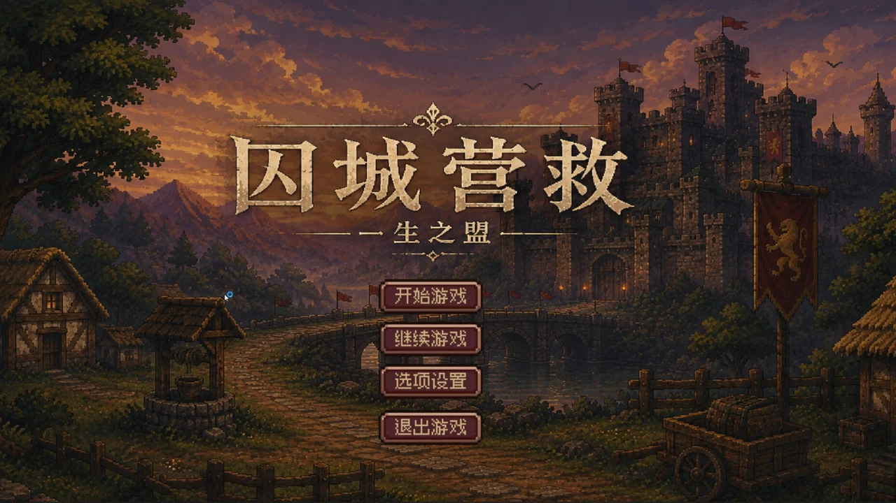
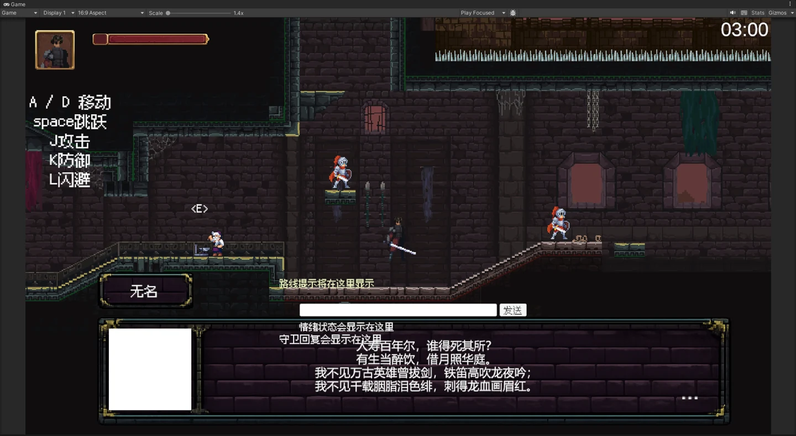

返回作品档案01 02 03 《囚城营救》游戏内演示截图

- 项目时间
- 2026.02 — 2026.06
- 项目类型
- 独立开发 / Unity 2D
- 我的职责
- 玩法设计 · 关卡搭建 · 功能实现
项目记录腾讯游戏创作大赛作品，独立使用 Unity 2D 开发；AI NPC 是后续计划。
把潜入、营救与撤离连成循环
基于《九州缥缈录》世界观，独立开发横版潜入营救游戏，承担核心玩法设计、关卡搭建与功能实现。
用三条路线承载不同挑战
设计三条差异化潜入路线，结合敌人巡逻、限时挑战和隐藏通道，围绕同一营救目标提供不同的行进选择与应对方式。
在现有原型上继续探索
后续希望接入 AI NPC，实现动态对话与角色行为反馈。这部分属于未来探索方向，与已完成的玩法、关卡和功能实现分开记录。
留下了什么
- 可玩游戏原型
- 三条潜入路线
- 玩法与功能实现

相关材料
观看演示视频